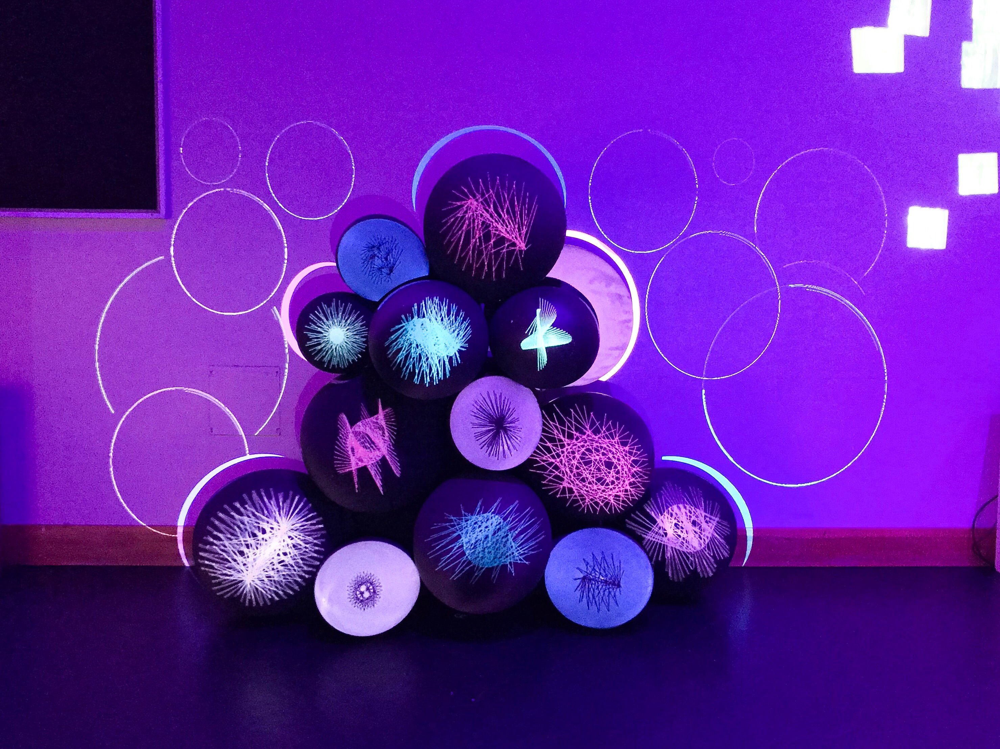
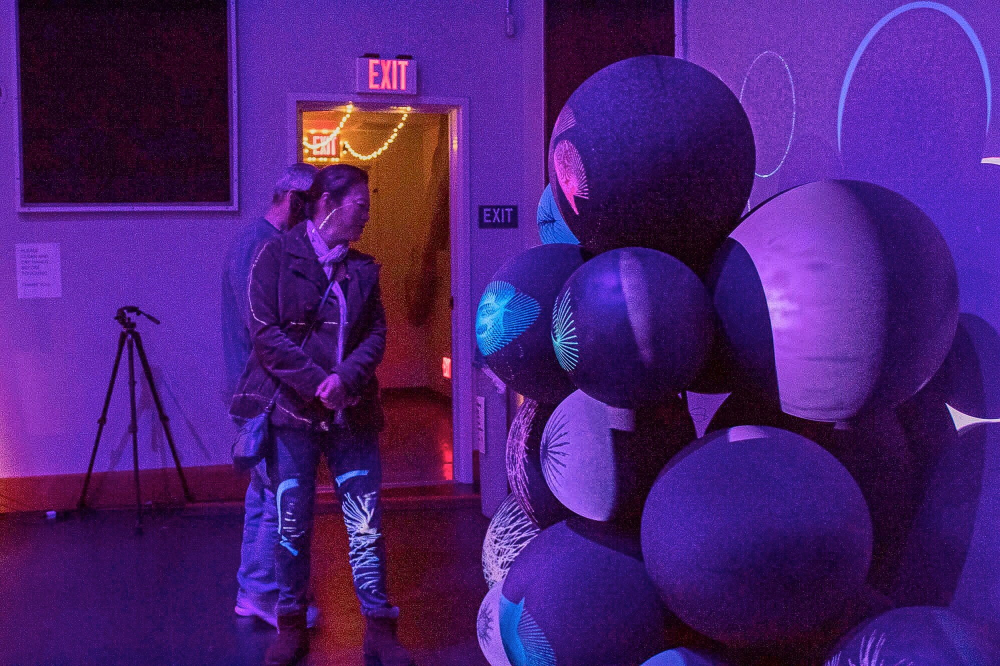
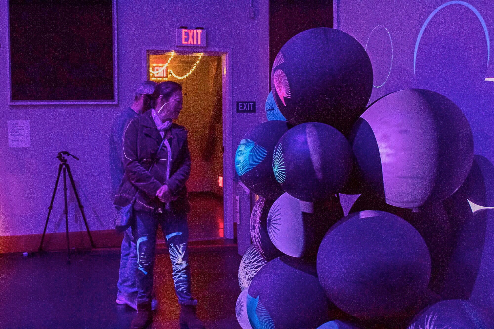
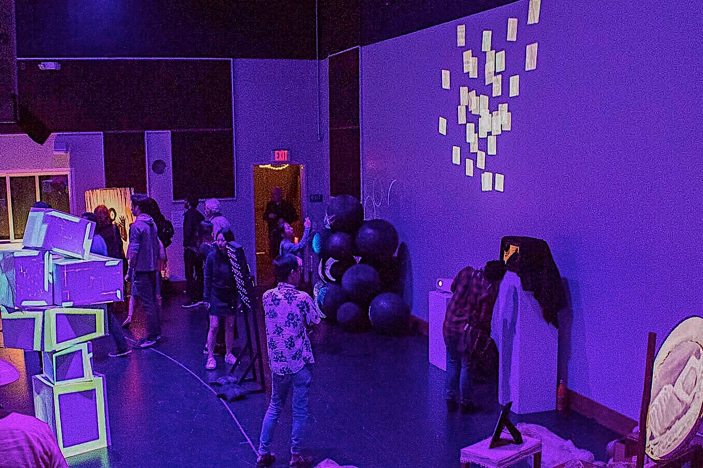

sin(machine creativity)
Yulia Valiakhmetova
In today’s technologically advanced world, humans are not original in terms of creativity. They reinvent and make connections between things they have seen. They built on what is already learned and what others have done before while machines can create from scratch. The machine can be programmed and can produce completely unique results unlike anything else that exists.
The artwork I created is a collaboration between myself and the machine. I gave up control over some aspects of my art and made the machine consider a new creative process in order to get more surprising results. My artwork is an experiment and a happy accident where I create code and blend it with an unpredictable force to produce completely unique results. By implementing algorithms and incorporating math in Java, but having no results in mind, my machine and I were able to create geometrical patterns that are different each time I run the generation script. After getting these surprising results I started to wonder if machines are becoming more creative than humans..?
 
 